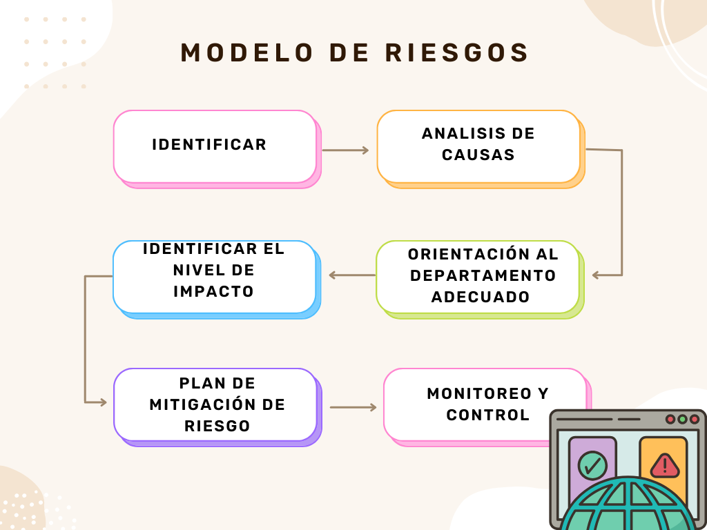

Conceptos
Administración
- La administración es el proceso de planificar, organizar, dirigir y controlar los recursos de una organización para alcanzar objetivos específicos de manera eficiente y eficaz.
- Es una actividad humana que coordina los esfuerzos de un grupo de personas para alcanzar un propósito común.
- La administración se refiere al arte y la ciencia de tomar decisiones sobre la asignación de recursos limitados para maximizar la eficiencia y la efectividad.
Administración de Proyectos
- La administración de proyectos es la aplicación de conocimientos, habilidades, herramientas y técnicas a las actividades del proyecto para cumplir con los requisitos del proyecto.
- Es el proceso de planificar, ejecutar y finalizar proyectos de manera efectiva y eficiente para cumplir con los objetivos del proyecto y satisfacer las expectativas de los interesados.
Negociación
- La negociación es el proceso por el cual dos o más partes con intereses comunes o en conflicto buscan llegar a un acuerdo mutuamente aceptable.
- Es una forma de comunicación destinada a resolver diferencias y llegar a acuerdos que satisfagan las necesidades y deseos de las partes involucradas.
Proceso Administrativo
El proceso administrativo comprende las funciones básicas de la administración: planificación, organización, dirección y control. Estas funciones se interrelacionan y se repiten de manera cíclica para lograr los objetivos de la organización.
Manipulación
- La manipulación es el control o la influencia que se ejerce sobre una persona o situación, generalmente de manera hábil o subrepticia, para obtener un resultado deseado.
- Es el acto de influir en alguien de manera indirecta o engañosa para lograr un objetivo personal o de grupo.
Eficacia
La eficacia se refiere a la capacidad de alcanzar los objetivos y resultados deseados. Una persona o proceso es eficaz si logra los resultados esperados.
Eficiencia
La eficiencia es la capacidad de utilizar los recursos disponibles de manera óptima para alcanzar los objetivos deseados, minimizando el desperdicio y maximizando la productividad.
Riesgos en Proyectos
Riesgos
- Un riesgo es una posibilidad de que ocurra un evento que tendrá un impacto negativo en la consecución de los objetivos.
- Es la incertidumbre respecto a la ocurrencia de un evento que pueda afectar el desempeño de una organización o proyecto.
- El riesgo implica la exposición a la posibilidad de una pérdida o daño.
Definiciones de Riesgos en Proyecto
- Los riesgos en un proyecto son eventos o condiciones inciertas que, si ocurren, tendrán un impacto positivo o negativo en los objetivos del proyecto.
- La gestión de riesgos en proyectos implica identificar, analizar y responder a los riesgos durante el ciclo de vida del proyecto para minimizar sus impactos negativos y maximizar sus oportunidades.

Administración de nuestro proyecto
Sección de Alumnos
Luis Castro
Arturo García
Kennya Orona